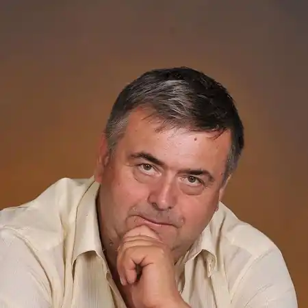
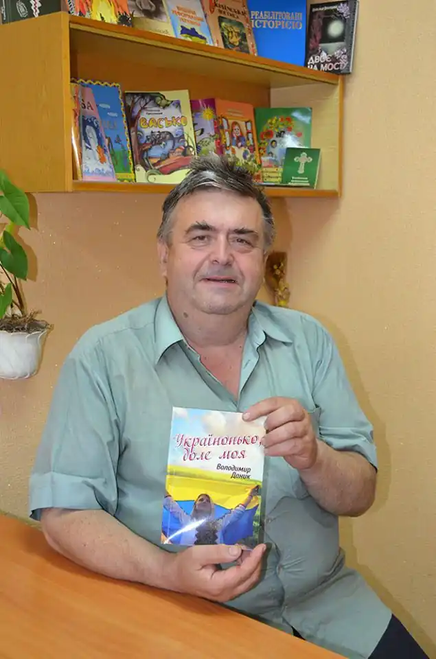

Поет-лірик і поет-гуморист, прозаїк-фантаст, автор і виконавець власних пісень Володимир Олексійович Даник народився 5 березня 1957 року в смт Лисянка Черкаської області. З 1961 року проживає у Черкасах. Закінчив середню школу № 10 міста Черкаси з золотою медаллю, потім Рязанський радіотехнічний інститут. Працював за фахом у НДІ "Акорд" м. Черкаси. З 1993 року пов'язав свою наукову та викладацьку діяльність з Черкаським державним технологічним університетом (раніше – Черкаський інженерно-технологічний інститут). Автор слів гімну ЧДТУ, що не раз виконувався під час різноманітних заходів, що проводились у вузі.
1984 року став лауреатом конкурсу "Автора! Автора!", який проводився журналом "Перець" та міністерством культури України.
1987 року став лауреатом поетичного конкурсу, що проводився журналом "Українська культура". 1992 року став лауреатом першого Всеукраїнського фестивалю-конкурсу гумору, що проходив у Києві. Лауреат ряду обласних конкурсів на кращу пісню. 1994 року став лауреатом Міжнародного літературного конкурсу "Гранослов". Твори друкувалися в обласній та всеукраїнській пресі, у журналах "Вітчизна", "Київ", "Україна", "Наука та суспільство", альманахах "Холодний яр", "Спадщина", у випусках "Антології сучасної новелістики та лірики" (за 2003, 2004, 2005 та 2007 роки). Протягом 1991-2001 рр. були видані ліричні збірки В. Даника: "Шевченків край у пісні і в серці", "Хай розкаже гітара", "В звуках я хочу с природой слиться", "Черкащина – це серце України", "Квітни, моя Україно", "Там, де сивий Дніпро котить хвилі свої", "В мого міста козацьке ім'я", "Іду вклонитися Тарасу", а також п'ять гуморо-сатиричних. Крім того, вийшла у світ прозова збірка "Дорога до Марса" (1995 р.). 1996 року прийнято в члени Національної спілки письменників України. 1998 року вийшла у світ книга пісень композиторів Черкащини на слова Володимира Даника "Ми з Шевченкового краю". У 2006 році побачила світ шістнадцята книга Володимира Даника "У Черкасах – сміються!", де представлений гумор у якнайширшому розмаїтті жанрів – прозові усмішки та фантастичні оповідання, віршовані гуморески і бувальщини, байки, іронічні сонети, жартівливі пісні, пародії, дружні присвяти, епіграми, афоризми і т.д. У 2007 році вийшов у світ двотомник "Письменники Черкащини", де досить таки об'ємно представлені вірші, усмішки, пісні, проза Володимира Даника.